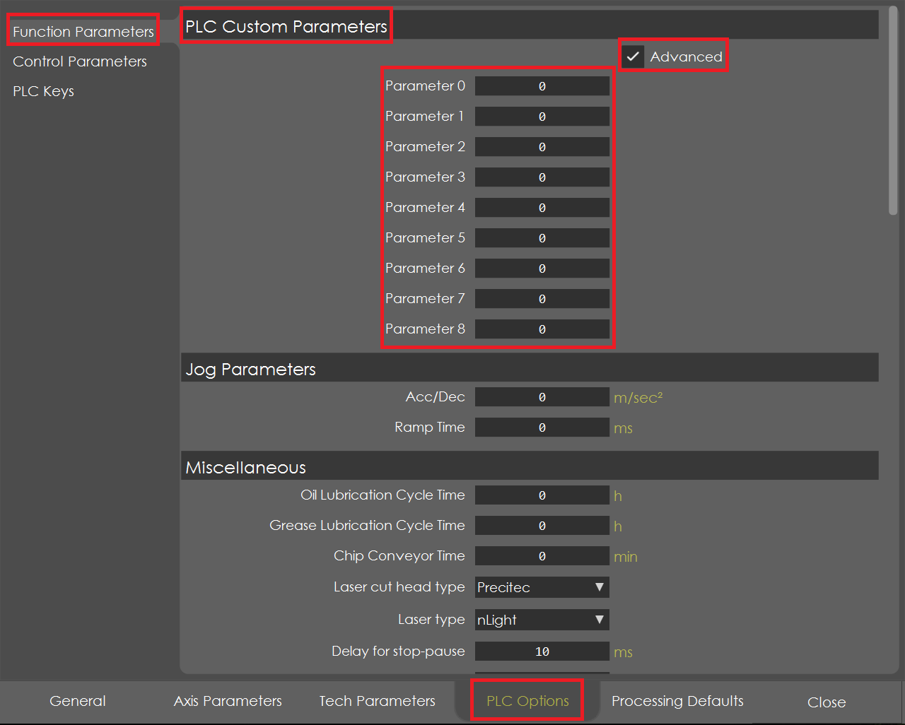
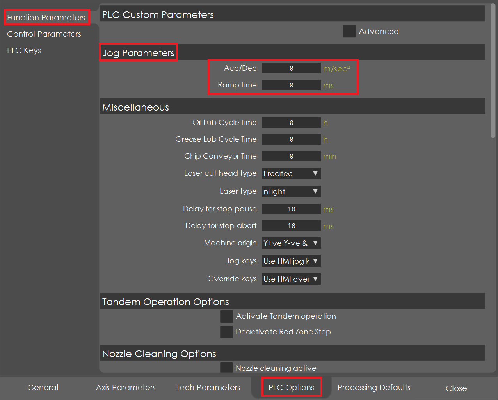
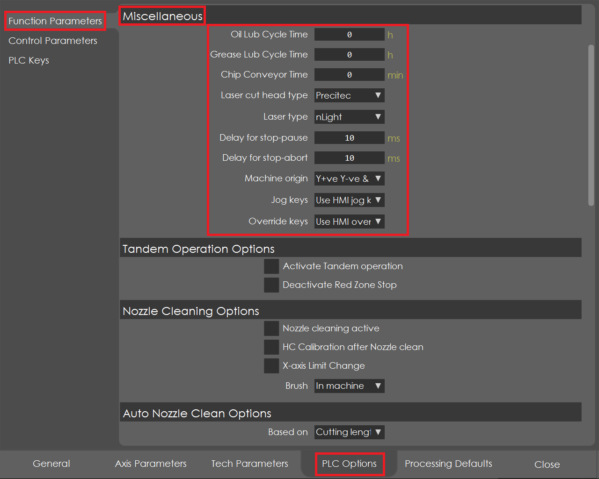
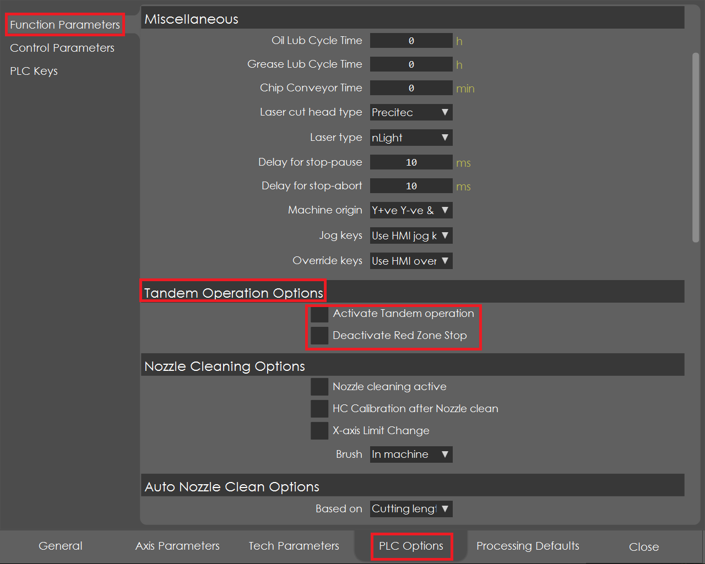
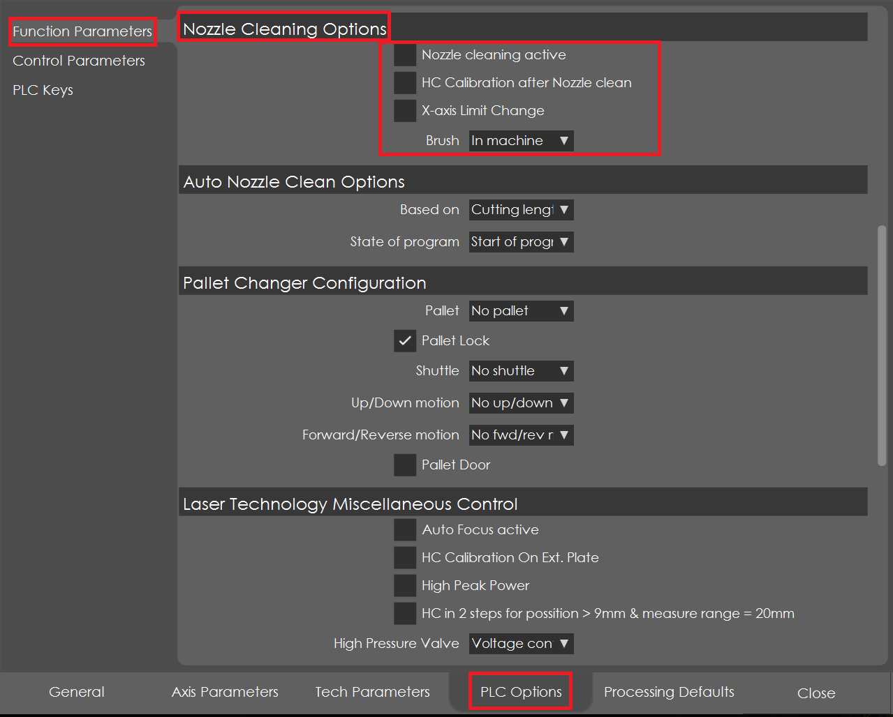
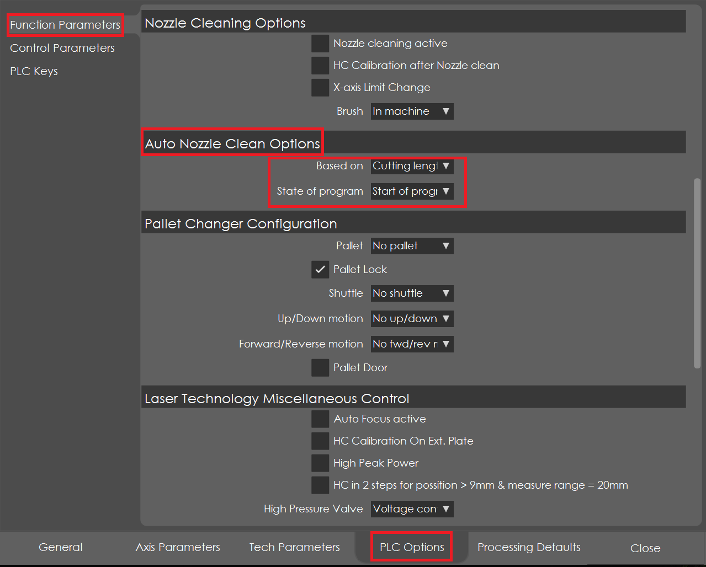
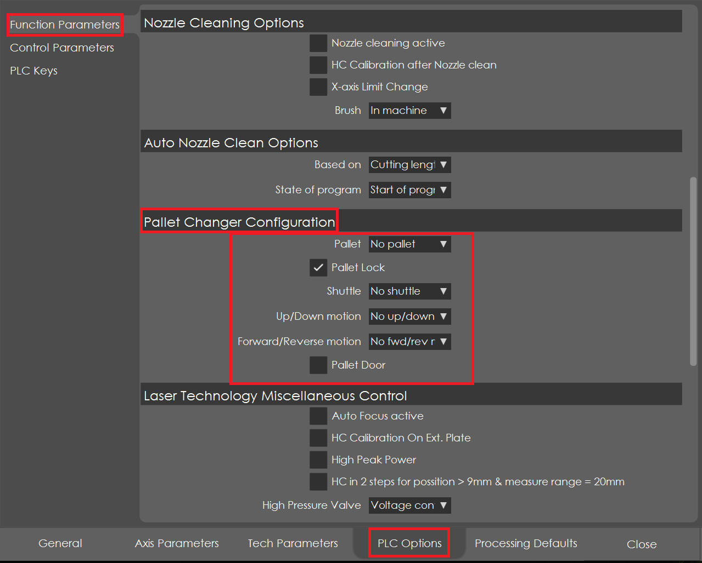
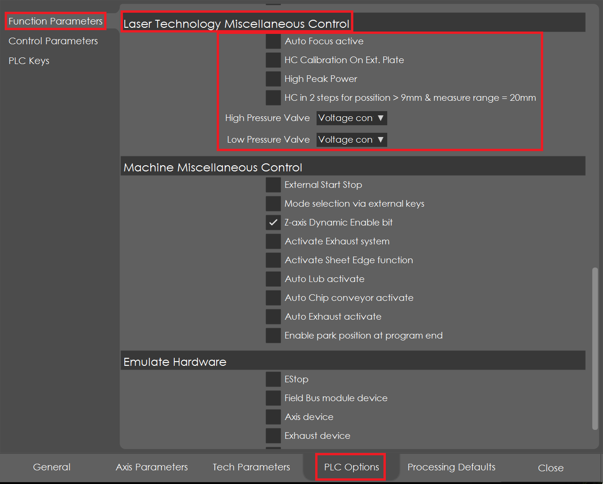
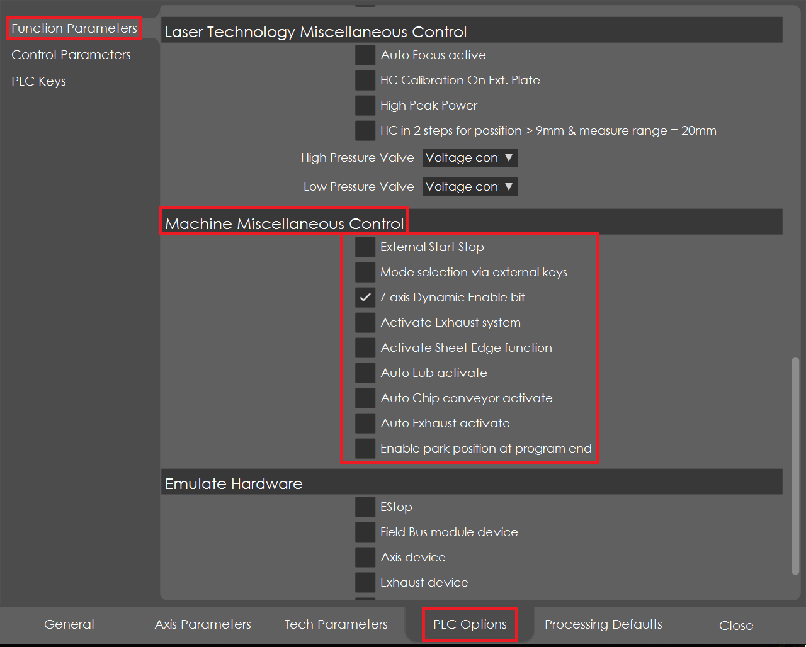
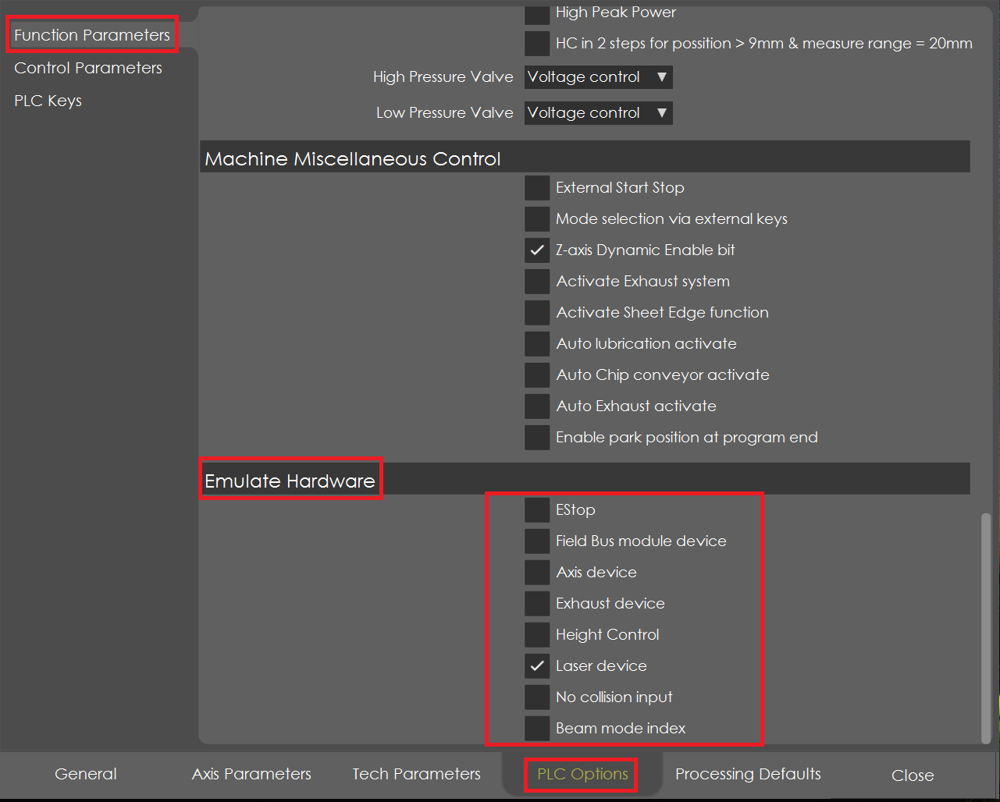

FUNCTION PARAMETERS
PLC CUSTOM PARAMETERS
Select PLC options, choose function parameters and enable advanced to access PLC custom parameters.

The PLC custom parameters from 0 to 8 are left free for future expansions or OEM’s can assign the values to access in the PLC.
JOG PARAMETERS
In PLC options, select function parameters to access jog parameters.

1 Acceleration/Deceleration
It defines the parameter for jogging purpose. It is the rate of change of velocity with respect to time. The units of acceleration are meters per second squared. An object is accelerating if it is changing its velocity.
2 Ramp Time
It defines the parameter for jogging purpose. It is the time in milliseconds in which the ramps specified in ACCELERATION should be reached.
So far, a default value of 6m/sec2 (ACC/DEC) and 100ms (Ramp time) are used.
MISCELLANEOUS
In PLC options, select function parameters to access miscellaneous.

1 Oil Lub Cycle Time_
-
This defines the interval of Oil lubrication cycle to be carried out in the machine before start of the program. If this value is > 0, then the Oil cycle function will be activated in the PLC.
2 Grease Lub Cycle Time
-
This defines the interval of Grease lubrication cycle to be carried out in the machine before start of the program. If this value is > 0, then the Grease cycle function will be activated in the PLC. Note: if both Oil & Grease cycle time are > 0, then the Cycle program will be activated based on the maximum time of Oil & Grease lub cycle.
3 Chip Conveyor Time_
-
This defines the maximum time of Chip conveyor motion. If activated via external key, the Chip Conveyor will run for this defined time & stop. If activated by the start of program, then after the completion of program, it will run for this time & stop. If this value is > 0, then the Chip Conveyor function will be activated in the PLC.
4 Laser Cutting Head Type
-
Following are the list of Cutting Head Type supported in the PLC: 00 : No Head 01 : Precitec 02 : Procutter EG8030 03: Procutter2.0 EG8050 Select the appropriate head used in the machine and accordingly the PLC function will be activated.
5 Laser Type
-
Following are the list of Laser Type supported in the PLC: 00 : No Laser Source 01 : IPG_YLS Laser 02 : GSI Laser 03 : Rofin Laser 04 : IPG_YLM Laser 05 : IPG_YLR Laser 06 : nLight Laser 07 : Raycus Laser 08 : Trumpf Laser 09 : SPI Laser Select the appropriate laser used in the machine and accordingly the PLC function will be activated.
6 Delay for stop button - Pause program
-
This defines the delay time of Stop button (1st press) to pause the program. If the input exists more than this delay time, then the program is paused.
7 Delay for stop button - Abort program
-
This defines the delay time of Stop button (2nd press) to abort the program. If the input exists more than this delay time, then the program is aborted.
8 Machine Origin Point Left, Right, Up, Down
- This defines the origin point of the Machine with axis direction definition as follows: 0 : X-, X+ & Y+, Y- 1 : X-, X+ & Y-, Y+ 2 : X+, X- & Y-, Y+ 4 : X+, X- & Y+, Y- 8 : Y+, Y- & X+, X- 16 : Y+, Y- & X-, X+ 32 : Y-, Y+ & X-, X+ 64 : Y-, Y+ & X+, X-
9 Used to define the Jog keys
-
Following are the options of Jog Keys assignment: 0 : HMI keys – will use the HMI keys to jog the axis 1 : External Axis Sel & Jog keys – Axis selection & jog keys are used in Machine control panel 2 : External XY Jog keys – X+ X- / Y+ Y- key assignment According to the above selection, the Jog key function is activated in the PLC.
10 Used to define the Override keys
-
Following are the options of Override Keys assignment: 0 : HMI – will use the HMI Override keys 1 : Rotary Switch (Gray Code) – Override values depends on the position of rotary switch 2 : Potentiometer – Override values depends on the potentiometer analogue input 3 : Encoder – Override values depends on the encoder position 4 : Buttons – Override - & Override +; buttons to change the override values According to the above selection, the Override key function is activated in the PLC.
TANDEM OPERATION OPTIONS
In PLC options, Select function parameters to access tandem operation options.

1 Activate Tandem Operation
-
Will activate the tandem function in the PLC and check for the communication to the other controller.
2 Deactivate Red Zone Stop
-
Will deactivate the red zone stop function in the PLC, during program running in tandem operation. Red Zone is the absolute area calculated between the Gantry 1 start of the left-side program pause distance and Gantry 2 start of the right-side program pause distance. For more information, refer Dual Head Tandem Operation manual.
NOZZLE CLEANING OPTIONS
In PLC options, Select function parameters to access nozzle cleaning options.

1 Nozzle Clean Active
-
Will activate the Nozzle clean function in the PLC and corresponding sub programs will be activated in the NC
2 HC Calibration after Nozzle Clean
-
Will activate the Height control calibration program in the PLC after the completion of the Nozzle cleaning program.
3 X-axis Limit Change
-
Will activate the 2nd limit value of X-axis for Nozzle cleaning program. Refer above the Custom parameter of X-axis Limit value for clear understanding.
4 Brush
-
Selects the Location of Brush either in the Machine or in the Pallet. If the brush location is in the pallet, then an additional interlock is activated in the PLC to check the position of the pallet before the start of the Nozzle Cleaning program.
AUTO NOZZLE CLEAN OPTIONS
In PLC options, Select function parameters to access auto nozzle clean options.

1 Based On
-
The auto nozzle clean program can be activated based on the following options: i. Cutting length. ii. Number of Piercing the corresponding values are entered in the Custom parameter.
2 State of Program
-
Selects the option to when to activate the Nozzle program if the above conditions are met. i. Before start of a Program ii. During running of program after the M15 command. Depends on both the options selected above, the PLC will activate the auto nozzle cleaning program.
PALLET CHANGER CONFIGURATION
In PLC options, Select function parameters to access pallet changer configuration.

1 Pallet_
-
Select the type of pallet used in the machine No Pallet – Pallet functions are disabled in the PLC. Single Pallet – Only one pallet in the machine Double Pallet – Two pallets in the machine
2 Pallet Lock
-
Enables the Pallet Lock function in the PLC. If the Pallet has the locking system to ensure its position and to avoid the shaking of Pallet due to axes motions, enabling it will check the feedback of lock position in the PLC. Also make sure the lock is released before the start of Forward / Reverse motion of the Pallet.
3 Shuttle
-
Defines the type of shuttle system used in the Pallet and following are the options available:
No Shuttle – No Pallet motion.
1 level shuttle – Pallet moves forward & reverse, whereas the cutting height remains the same.
2 level shuttle, single drive – There are 2 pallets with single drive such that a forward motion will bring the Top pallet to the cutting position and the reverse motion will bring the Bottom pallet to the cutting position with a difference in cutting height. Hence according to the Top/Bottom pallet, the Z- axis negative limit is dynamically updated in the PLC with the value mentioned in the Technology parameter.
2 level shuttle, double drive – There are 2 pallets with individual drive for each pallet, with difference in cutting height. Hence according to the Top/Bottom pallet, the Z-axis negative limit is dynamically updated in the PLC with the value mentioned in the Technology parameter.
4 Up Down Motion
-
Defines the type of drive system used for Up/Down motion in the Pallet. No Up/Down motion Hydraulic system Induction motor Servo motor According to the type of drive system, the respective functions are activated in the PLC.
5 Forward Reverse Motion
-
Defines the type of drive system used for Forward/Reverse motion in the Pallet. No For/Rev motion Induction motor Servo motor According to the type of drive system, the respective functions are activated in the PLC.
LASER TECHNOLOGY MISCELLANEOUS CONTROL
In PLC options, Select function parameters to access laser technology miscellaneous control. 
1 Auto Focus Active
-
Activates the focus positioning function in the PLC. If a cutting head has the option of auto focus positioning, then activated this function.
2 HC Calibration on Ext. Plate
-
If the machine is installed with separate plate for doing the Height sensor calibration, then activating this function will enable the Calibration program to be carried out in this plate. Also, it is required to enter the offset position of this plate in S51 work offset table.
3 High Peak Power
-
If the Laser source has an option of “High Peak Power” HPP mode, then activating this function will enable different scaling factor for analogue output depends on the command power value.
4 HC in 2 steps for position > 9mm & measure range = 20mm_
-
If Height control measuring range is 20mm and a command of 15mm can be directly positioned using the sensor feedback. But sometimes the positioning is not accurate due to capacitance level at higher heights. Hence activating this function, will enable the positioning in 2 steps for height greater than 9mm. First, it will position to the height of 2mm (internally) and from there it will position to the given command.
5 High Pressure Valve_
-
Defines the control type of High-Pressure Valve as follows: Voltage Control Current Control
6 Low Pressure Valve_
-
Defines the control type of Low-Pressure Valve as follows: Voltage Control Current Control
MACHINE MISCELLANEOUS CONTROL
In PLC options, Select function parameters to access machine miscellaneous control.

1 External Start Stop
-
Activates the External Start Stop button and deactivates the HMI Start Stop button
2 Mode Selection via External keys
-
Enables the mode selection (Jog, Program, Auto, etc.,) via the external key. But for Vulcan, this function disabled.
3 Z-axis Dynamic Enable bit
-
Z-axis is the vertical axis and at idle condition to hold its position it draws more current, which may heat up the motor. Enabling this function will disable the power of Z-axis at idle condition and brake is enabled, thereby heating of the motor is reduced. When there is a motion command to the Z-axis, it automatically enables and start the motion.
4 Activate Exhaust System
-
Enables the Exhaust system function in the PLC
5 Activate Sheet Edge Function
-
Enables the Sheet Edge function to determine the sheet origin point and orientation of sheet with respect to machine axis. Accordingly, the program is adjusted to sheet orientation and start cutting.
6 Auto Lub Activate_
-
Enables the Auto Lubrication cycle, which will run the Lubrication program when reaches the specified time
7 Auto Chip Conveyor Activate
-
Enables the chip conveyor motion at the start of the program if the Laser is ON.
8 Auto Exhaust Activate
-
Enables the Exhaust system at the start of the program if the Laser is ON.
9 Enable Park Position at program end
-
Enables the axes to move to park position at the end of program.
EMULATE HARDWARE
In PLC options, select function parameters to access emulate hardware.

For testing purpose, the following hardware functions are emulated internally in the PLC. Estop – will emulate the emergency stop input. Field Bus module device - will emulate the field bus IO module. Axis device – will emulate the axis device functions. Exhaust device – will emulate the exhaust device functions. Height Control – will emulate the height control functions. Laser device – will emulate the laser device functions. No collision input- will emulate the Collision input. Beam mode index- will emulate the Beam mode when nLight-without Corona oscillator is selected where there is no Beam mode function in it.